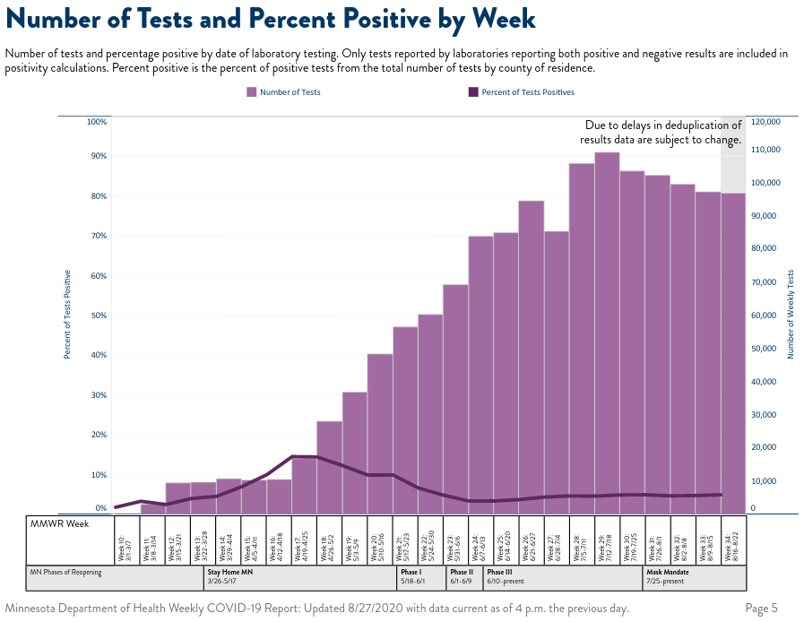

September 18th 2020

See John Hopkin's explanation of how to use positivity rate to assess local heatlh risk.
The standard deviation of sample proportion for the most recent week of Boynton and UMD-HS are ~2% and ~8.5% respectively.
UofMN data has a large testing bias. Students are only tested if they are symptomatic or have been directly exposed to COVID-19 to recieve a test. This is despite the fact the infected young people, such as students, are usually asymptomatic. Boynton does not report student-athlete data.
Testing is more restricted for faculty and staff. Faculty and staff must be on campus when they first have symptoms to receive a test.
Placing barriers in the way of testing does not promote safety. Barriers to testing and thereby obscuring the impact of the virus on campus promotes the spread of COVID-19.
There is a current narrative that students are responsible for preventing the spread of COVID-19 when the campus re-opens to classes this coming Monday. Ultimate responsibility for safety on campus rests on the UofMN's Administration and Board of Regents. By re-opening the campus to classes during a pandemic President Gabel's Administration has put students, faculty, staff, and Minnesotans at great risk. Restricting access to COVID-19 tests compounds the risk.
August 28th 2020
Campus Dashboards:
Overall, this is great news. (Much better than no data.) A high positive percent rate indicates there is a high number of people who are infected and do not know it. It is a critical stat for judging personal safety at the U.
That doesn't mean we don't need more data! I'm not sure if the UofMN has data collected from other sources or if they are allowed to release that data. During a test people are supposed to state where they go to school or work, so the state should have this data. FOIA
The dashboards publish COVID-19 for tests performed by the UofMN. There are two UofMN COVID-19 testing groups: Boynton (Twin-Cities campus) and UMD-HS (Duluth campus). Therefore, Crookston, Morrison, and Rochester's dashboards do not include test data.
Boynton test data includes (1) Number of tests, (2) Student positive cases, (3) Non-student positive cases, (4) Total positive cases, and (5) Percentage of positive cases. These data types are represented as a cumulative and weekly value. Duluth is similar, but does not include non-student data.
As it appears now, only the cumulative and weekly data is reported. It is unknown if historical data will be provided next week, which is important for accurate reporting. Most COVID-19 tests cannot be read immediately, so tests administered near the end of the week may not be reported. To address this, The Weekly COVID-19 Report from the Minnesota Department of Health (MDH) the most recent week is highlighted as subject to change and updated in future reports.

Also, all campus dashboards include usage data for dorm rooms set aside for students living on campus to isolate or quarantine.
This spreadsheet will record data published to the UofMN dashboards. It also includes the weekly percentage of positives cases for Minnesota as reported by the MDH.
Two questions I have about the data is:
August 24th 2020
Official links:
The Deputy Director for the UMN's Center for Infections Disease Resaerch and Policy (CIDRAP), Jill DeBoer, pushed back against reporting University COVID data publicly, because the data would be incomplete. Essential, Jill DeBoer claimed that the data would under represent the total number of cases and therefore should not be published at all. Her arguments are all red herrings. Data sets are rarely perfect. @CIDRAP researchers understand this. Why does President Gabel's administration want to hide COVID data?
"I think [reporting public COVID data] is fairly simple. Number of tests given. Number of positive tests received. Let's not hide the data from the students who's data is being used for the material. Let's not underestimate the public and student's ability to manage and understand the data and the limitations of the data." - Regent Richard Beeson #UMNProud
UMN President Gabel's COVID "Pivot" proposal disingenuously combines two issues: (1) opening the UMN to on-campus learning and (2) delaying the on-campus student move in date. Gabel frames the move-in delay as a fairness and safety issue. The proposal passed 8-3.
Regent Jane Mayeron voiced that it was important to vote on each issues in President Gabel's COVID Pivot proposal separately. Regent Beeson and Rosha also showed interest separate votes, but when pushed Regent Mayeron did not make a motion to split the question. This despite her stated belief that risks implied in the proposal would not just be to individuals, but to the community at large. Regent Mayeron voted for the joint proposal.
President Gabel believes it would be unfair for students to move in before on-campus learning begins because, they would not have access to normal residential amenities, like the gymnasium and student dining halls. #UMNSafety
"When we think not just about this decision but, the pandemic at large, we have to remember that getting this wrong means people dying. We know the slides of the financial impacts, peoples college experience at stake, but that's not it. We have to bring it back to, "it's a pandemic" and the currency is lives here.", Regent Mike Kenyanya said before voting for the proposal to allow on-campus teaching.
Sviggum clearly understands that health experts are concerned with young people, like students, spreading COVID, but he would rather make personal attacks against those experts than deal with the safety of Minnesotans. #UMNShame
Sviggum should resign from the University Board or Regents, again.
UMN's Board of Regent's David McMillan believes that decisions for a pandemic should be based on LOCAL, specifically "Upper-Midwest", data. If McMillan does not understand the definition and implications of a PANDEMIC he should not be making these decisions.
👀 shoehorning cherry picked data for future decisions.
The Chair, Kendall Powell, praised and embraced McMillan's pandemic analysis.
Chair Kendall Powell interpreted the Council's advice as: "It's a public health issue we are focusing on and what is our duty in that regard." By their words and actions, public health was not a major concern of those who voted for President Gabel's proposal.
| Regent | Vote |
|---|---|
| Anderson | Absent |
| Beeson | No |
| Davenport | Yes |
| Her | Yes |
| Hsu | No |
| Kenyanya | Yes |
| Mayeron | Yes |
| McMillin | Yes |
| Powell | Yes |
| Rosha | No |
| Siminson | Yes |
| Sviggum | Yes |
During the meeting Regent Thomas Anderson stated he was for the proposal, but was absent during the vote.
Regents Her, Kenyanya and Mayeron: please join your fellow members who are advocating for students and public health. We need you to stand up and protect Minnesota.
Thank you Regent Michael Hsu for pushing the UMN Board of Regents to take care of infected students and to make UMN COVID data transparent to the public. #UMNProud
Regent Richard Beeson is a champion for remote learning, public health, and charging students honestly. Thank you! #UMNProud
Regents Beeson, Hsu, and Rosha: thank you for being advocates for students, faculty, staff, and our whole community. #UMNProud #MNProud